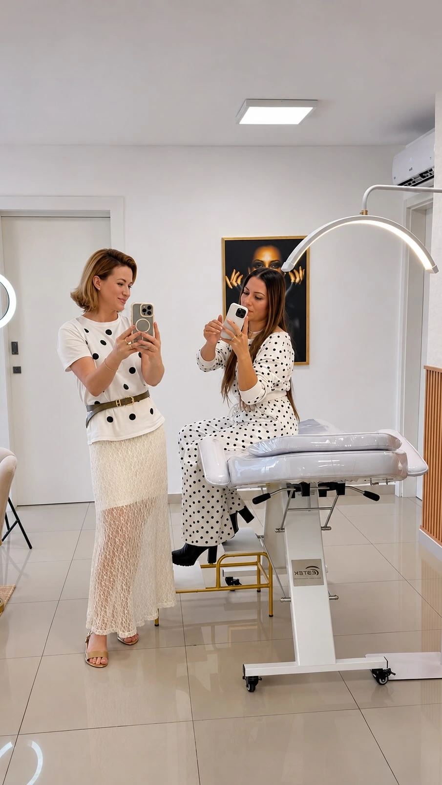

A sua expressão.
Em primeiro
plano.
Estética integrada em Tubarão. Conheça o olhar da Dra. Keity Marcolino para naturalidade, elegância e cuidado.
Conhecer o atendimentoReconhecer você.
O ponto de partida é a sua individualidade.
Um olhar mais próximo ↓
Expressão.Naturalidade não é
Naturalidade não é
uma fórmula.
É um olhar.
Cada pessoa chega com uma história e uma expectativa. A avaliação é o espaço para conversar sobre isso e conhecer as possibilidades do atendimento.
Conversar sobre avaliação
Mais perto.
Com tempo
para ouvir.
Conheça o ambiente apresentado no perfil e fale diretamente com a profissional para entender como acontece a primeira consulta.
Conhecer pelo InstagramAntes de
começar.
Como conversar sobre uma avaliação?
Use o perfil oficial para pedir informações sobre o atendimento e a disponibilidade.
Preciso saber qual procedimento quero?
Você pode começar contando o que procura e suas dúvidas. A indicação depende da avaliação profissional.
Onde confirmar endereço e horários?
Confirme os dados atualizados diretamente com a profissional antes de combinar sua visita.